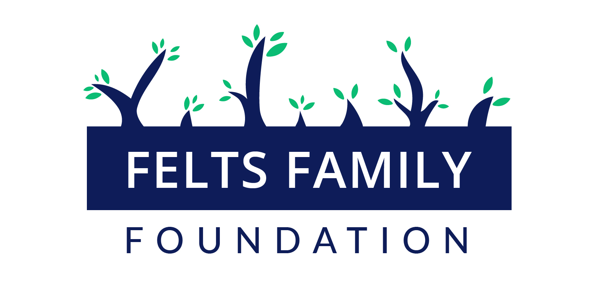
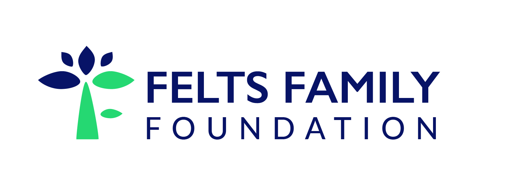

About APC
Alameda Point Collaborative is the largest supportive housing community in Alameda County. They primarily house the chronically homeless and have education and career training centers for their community.
What have I done?
Designing their infographic
APC wanted an infographic that would visualize and condense the contents of their annual report in a digestible way.
Iteration 1


After this iteration, APC told me to use a different color than the yellow, so I decided to move away from their color palette and replace it with a calmer baby blue.
Iteration 2


Designing their 20 years logo
Designing a logo fo Felts Family Foundation
My call notes
- His foundation sponsors organizations that supports cultural, female, or girl empowerment.
- Open to any colors except red (because those are the primary colors of the 2 organizations he supports).
- Ideally would like a text + small graphic.
- Potentially wants the logo to reflect the F's in Felts Family Foundation.
Iterations

